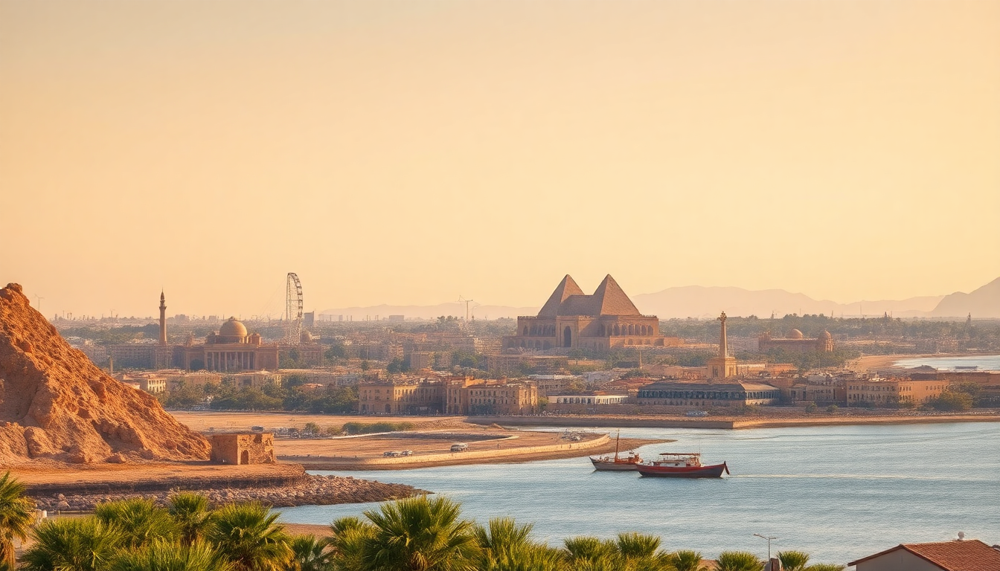

Egypt Travel Guide: Cairo, Luxor & Alexandria Cities

I spent three weeks bouncing between Cairo, Luxor, and Alexandria, and by the end I had a clear picture of what works and what doesn’t. This guide covers the honest logistics—where we stayed, what we skipped, and the specific spots that made each city worth the trip.
Why visit Cairo first?
Cairo hits you with noise, dust, and chaos the moment you step out of the airport. That’s part of its charm. The city is a living museum, but you have to know where to look. We based ourselves in Zamalek, the leafy island district on the Nile. It’s quieter than downtown, with good cafes and fewer touts. From there, we walked to the Egyptian Museum in Tahrir Square—old-school, dusty, but packed with Tutankhamun’s gold. Skip the mummy room unless you’re really into that.
- Giza Pyramids: Go at 7 AM sharp. By 9, the bus crowds arrive. We hired a guide from Emo Tours (booked online) to skip the camel-hassle at the entrance.
- Khan el-Khalili bazaar: Worth an hour for the atmosphere, not for serious shopping. The El Fishawy cafe is overpriced but iconic—order mint tea, people-watch, leave.
- Al-Azhar Park: Best sunset spot in the city. The view over the old city’s minarets is free if you walk in through the side gate near the Citadel.
- Food: Kebabgy in Zamalek for grilled meats. Zooba for quick, clean street food like koshari and ful.
We stayed at The St. Regis Cairo on the Nile—pricey but worth it for the pool and quiet. If you’re on a budget, Holiday Inn Cairo Maadi is solid and near the metro.
Is Luxor worth the flight?
Yes, but only if you have at least three full days. Luxor is compact—most temples are within a 10-minute drive of each other—but the heat and scale will wipe you out. We flew from Cairo (1 hour, EgyptAir) rather than taking the overnight train. The train is cheaper but we heard horror stories about delays and dirty cabins.
- West Bank (Valley of the Kings): Go to Tomb of Ramesses VI (KV9) and Tomb of Seti I (KV17) if you can afford the extra ticket. The colors are still vivid. Skip the Valley of the Queens unless you’re a completionist.
- East Bank (Karnak & Luxor Temple): Karnak is overwhelming—give it two hours minimum. Luxor Temple is better at night when it’s lit up. Both are walkable from the Sofitel Winter Palace Luxor, where we had afternoon tea on the terrace.
- Hot air balloon: We booked through Memphis Tours for sunrise. It’s touristy but the view over the Nile and the Valley of the Kings from above is genuinely worth the 5 AM wake-up.
- Food: Sofra restaurant for Egyptian home cooking (the stuffed pigeon is excellent). Al-Sahaby Lane for a rooftop view of Luxor Temple.
We stayed at Hilton Luxor Resort & Spa—it’s a 15-minute drive from the temples but has a private beach on the Nile and a decent pool. The Windsor Hotel in town is cheaper and older but has character.
How many days in Alexandria?
Two full days is enough. One day for the coastal sights, one day for the Roman ruins and the library. Alexandria feels nothing like Cairo—it’s Mediterranean, slower, and the air actually smells like sea salt. We took the train from Cairo’s Ramses Station (2.5 hours, first class, about $10) and it was smooth.
- Bibliotheca Alexandrina: The modern library is stunning. The free exhibits inside (including a manuscript museum and a planetarium) can eat up half a day. Don’t skip the Antiquities Museum in the basement.
- Fort Qaitbey: Built on the site of the ancient lighthouse. The walk along the Corniche from the library to the fort is about 30 minutes—do it at sunset.
- Catacombs of Kom el Shoqafa: Underground Roman tombs that are eerie and fascinating. Go early to avoid tour groups.
- Montazah Palace Gardens: More of a local picnic spot than a must-see. The palace is closed to visitors, but the gardens are free and quiet.
- Food: Mohamed Ahmed for the best fuul and falafel in town—it’s a dive but legendary. Fish Market for fresh seafood on the harbor (try the grilled sea bass).
We stayed at Steigenberger Cecil Hotel—old-world, slightly faded, but right on the Corniche with a balcony overlooking the harbor. The Four Seasons San Stefano is newer and fancier but feels disconnected from the old city.
When is the best time to visit Egypt?
October through April. We went in late November and the days were 25°C (77°F) in Cairo, dropping to 15°C at night. Luxor was hotter—around 30°C—but bearable. Avoid June through August unless you enjoy 40°C heat and empty streets. Ramadan (dates shift yearly) means shorter museum hours and fewer restaurants open during the day, but the nightlife is lively. We avoided it.
What’s the best way to get between cities?
- Cairo to Luxor: Fly (EgyptAir, 1 hour, $80-120 one-way). The overnight sleeper train (Wagon Lit) is an option but we heard mixed reviews about cleanliness and punctuality.
- Cairo to Alexandria: Train from Ramses Station (first class, 2.5 hours, $10). The Trenitalia-operated service is clean and air-conditioned. Avoid the microbuses—they’re cramped and dangerous.
- Luxor to Alexandria: There’s no direct flight. You’ll need to fly back to Cairo first, then take the train. Plan a full day for this transfer.
We used Uber in Cairo and Alexandria—it’s cheap and avoids haggling. In Luxor, we hired a private driver for the day (about $30) through our hotel.
Is Cairo safe for solo travelers?
Yes, with standard precautions. We never felt unsafe in Zamalek or downtown, but the harassment in tourist zones (Giza, Khan el-Khalili) is relentless. Women should wear loose clothing covering shoulders and knees—locals appreciate it, and it cuts down on stares. We used Airalo eSIM for data (no SIM card hassle) and kept our phones in zipped pockets. The Zamalek neighborhood is the safest bet for solo travelers—good hotels, restaurants, and a 24-hour police presence.
FAQ
Is it worth visiting the Giza Pyramids if I only have one day in Cairo? Yes, but go at 7 AM and leave by 10 AM. The crowds and heat after that make it miserable. Combine it with the Sphinx (same site) and the Solar Boat Museum (extra ticket, worth it for the restored ancient boat). Skip the camel ride—it’s a scam factory.
Can I see Luxor in one day? Technically, but you’ll rush. A single day means picking one side of the Nile: either the Valley of the Kings and Hatshepsut’s Temple (West Bank) or Karnak and Luxor Temple (East Bank). We’d recommend the West Bank for the tombs, then catch a felucca sailboat on the Nile at sunset.
What should I pack for Egypt in winter? Layers. Days are warm (20-25°C) but nights drop to 10-15°C, especially in the desert. Bring a light jacket for evening walks and a scarf for mosques. Sunscreen and a hat are non-negotiable even in December. Comfortable walking shoes—you’ll clock 10,000 steps daily.
Conclusion
- Cairo needs at least 3 days: 1 for Giza, 1 for the Egyptian Museum and bazaar, 1 for Islamic Cairo and Al-Azhar Park.
- Luxor needs 3 days minimum: 1 for the West Bank tombs, 1 for Karnak and Luxor Temple, 1 for a balloon ride and downtime.
- Alexandria is a 2-day city: 1 for the library and fort, 1 for the catacombs and seafood.
- Fly between Cairo and Luxor; take the train to Alexandria.
- Stay in Zamalek (Cairo), the West Bank or East Bank hotels (Luxor), and the Corniche (Alexandria).